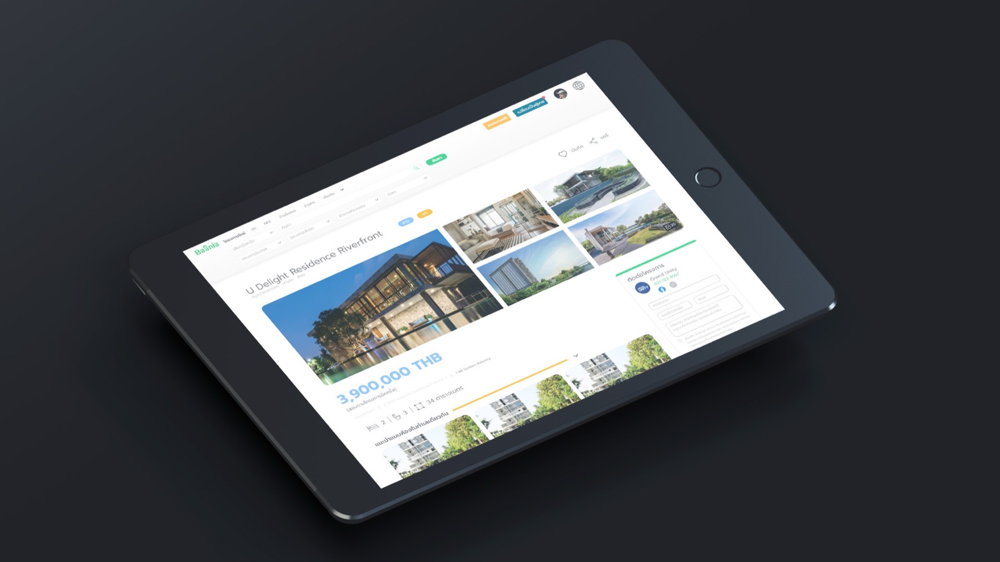
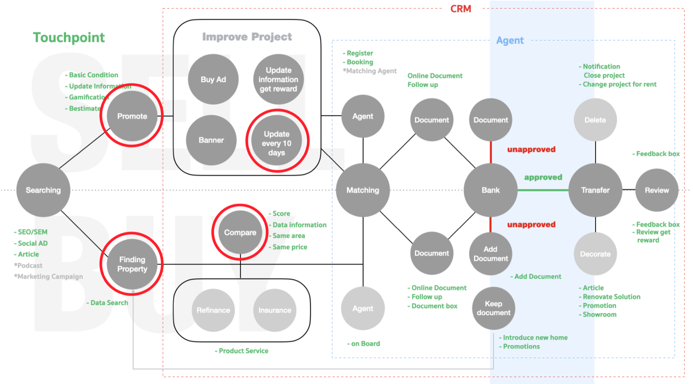
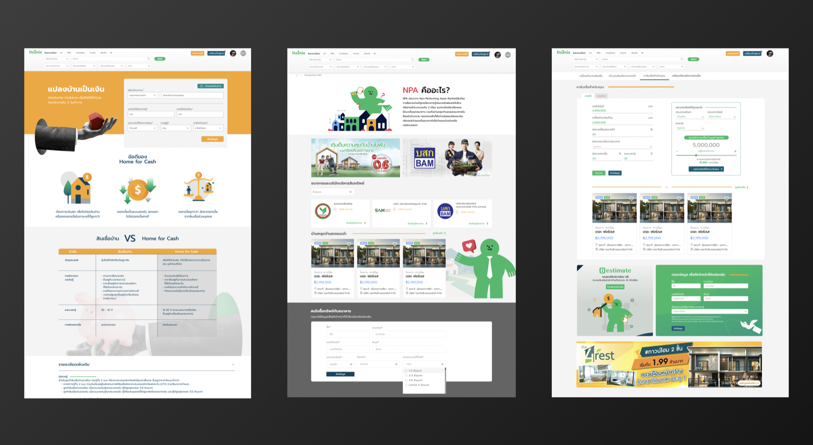

Baania.com had hundreds of thousands of listings — but users still felt lost. The interface told them everything except what mattered.
Baania.com had around 500,000 listings, neighborhood data, and agent networks. But the experience made users feel like they were searching for a needle in a haystack. Filters were buried. Comparisons were impossible. And on mobile? Painful.
The challenge wasn't adding features. It was making the existing depth feel effortless — turning data overload into confident decision-making.

Rebuilt the filter system from the ground up. Fewer steps to the right result — smarter defaults, contextual filters, and a results page that surfaces signal over noise.
Transformed Baania's valuation tools into something users could actually trust. Clear price comparisons and neighborhood trends — visualized to reduce anxiety, not add to it.
Redesigned the listing page for thumb-first navigation. Hero image, key specs, and "Contact Agent" all above the fold. Because decisions happen on the go.
Closed the gap between interest and action. The moment a user is ready to reach out, the path is clear — no dead ends, no friction, no lost leads.

Before jumping into design, we mapped out the full scope of what needed to improve. We started by identifying two distinct user types — Buyers and Sellers — and mapped their touchpoints separately. Each group had fundamentally different needs, pain points, and moments of friction that required their own research focus.
After the initial research phase, we discussed priorities with the business analyst. Together, we decided to formally separate the buyer and seller experiences — a structural change that would make future development significantly more manageable and scalable.
We chose to start with the seller side: improving the quality and completeness of property input on Baania.com. The core insight was simple — buyers were dropping off not because of the search experience, but because listings lacked enough quality information to make a decision. Better seller inputs meant better data for buyers.
